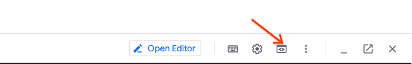

Lab 5 Docker Compose and Docker Security
Objective:
- Practice to use Docker Compose,
1 Docker Security¶
1.1 Scan images with Trivy¶
Trivy (tri pronounced like trigger, vy pronounced like envy) is a simple and comprehensive vulnerability scanner for containers and other artifacts. A software vulnerability is a glitch, flaw, or weakness present in the software or in an Operating System. Trivy detects vulnerabilities of OS packages (Alpine, RHEL, CentOS, etc.) and application dependencies (Bundler, Composer, npm, yarn, etc.). Trivy is easy to use. Just install the binary and you're ready to scan. All you need to do for scanning is to specify a target such as an image name of the container.
Step 1 Install Trivy
sudo apt-get install wget apt-transport-https gnupg lsb-release
wget -qO - https://aquasecurity.github.io/trivy-repo/deb/public.key | sudo apt-key add -
echo deb https://aquasecurity.github.io/trivy-repo/deb $(lsb_release -sc) main | sudo tee -a /etc/apt/sources.list.d/trivy.list
sudo apt-get update
sudo apt-get install trivy
Step 2 Specify an image name (and a tag).
$ trivy image [YOUR_IMAGE_NAME]
For example:
$ trivy image python:3.4-alpine
2019-05-16T01:20:43.180+0900 INFO Updating vulnerability database...
2019-05-16T01:20:53.029+0900 INFO Detecting Alpine vulnerabilities...
python:3.4-alpine3.9 (alpine 3.9.2)
===================================
Total: 1 (UNKNOWN: 0, LOW: 0, MEDIUM: 1, HIGH: 0, CRITICAL: 0)
+---------+------------------+----------+-------------------+---------------+--------------------------------+
| LIBRARY | VULNERABILITY ID | SEVERITY | INSTALLED VERSION | FIXED VERSION | TITLE |
+---------+------------------+----------+-------------------+---------------+--------------------------------+
| openssl | CVE-2019-1543 | MEDIUM | 1.1.1a-r1 | 1.1.1b-r1 | openssl: ChaCha20-Poly1305 |
| | | | | | with long nonces |
+---------+------------------+----------+-------------------+---------------+--------------------------------+
Step 3 Explore local images in your environment.
2 Docker Compose¶
In this module, will guide you through the process of building a multi-container application using docker compose. The application code is available at GitHub: https://github.com/Cloud-Architects-Program/ycit019
2.1 Deploy Guestbook app with Compose¶
Let’s build another application. This time we going to create famous Guestbook application.
Guestbook consists of three services. A redis-master node, a set of redis-slave that can be scaled and find the redis-master via its DNS name. And a PHP frontend that exposes itself on port 80. The resulting application allows you to leave short messages which are stored in the redis cluster.
Step 1 Change directory to the guestbook
cd ~/ycit019/Module5/guestbook/
ls
Step 2 Let’s review the docker-guestbook.yml file
version: "2"
services:
redis-master:
image: gcr.io/google_containers/redis:e2e
ports:
- "6379"
redis-slave:
image: gcr.io/google_samples/gb-redisslave:v1
ports:
- "6379"
environment:
- GET_HOSTS_FROM=dns
frontend:
image: gcr.io/google-samples/gb-frontend:v4
ports:
- "80:80"
environment:
- GET_HOSTS_FROM=dns
Step 3 Let’s run docker-guestbook.yml with compose
export LD_LIBRARY_PATH=/usr/local/lib
docker-compose -f docker-guestbook.yml up -d
Creating network "examples_default" with the default driver
Creating examples_redis-slave_1
Creating examples_frontend_1
Creating examples_redis-master_1
Note
-d - Detached mode: Run containers in the background, print new container names.
-f - Specify an alternate compose file (default: docker-compose.yml)
Step 4 Check that all containers are running:
docker ps
CONTAINER ID IMAGE COMMAND
d1006d1beee5 gcr.io/google-samples/gb-frontend:v4 "apache2-foreground"
fb3a15fde23f gcr.io/google_containers/redis:e2e "redis-server /etc..."
326b94d4cdd7 gcr.io/google_samples/gb-redisslave:v1 "/entrypoint.sh /b..."
Step 5 Test the application locally
Now that we've launched the application containers, let's try to test the web application locally.
You should be able to access the application at Google Cloud Web Preview Console:

Note
Web Preview using port 8080 by default. If you application using other port, you can edit this as needed.
Success
Nice you now have compose stuck up and running!
Step 6 Cleanup environment:
docker-compose -f docker-guestbook.yml down
Stopping guestbook_frontend_1 ... done
Stopping guestbook_redis-master_1 ... done
Stopping guestbook_redis-slave_1 ... done
Removing guestbook_frontend_1 ... done
Removing guestbook_redis-master_1 ... done
Removing guestbook_redis-slave_1 ... done
Removing network guestbook_default
2.2 Deploy Voting App using Compose¶
Step 1 Switch to Module5/example-voting-app folder :
cd ~/ycit019/Module5/example-voting-app/
Step 2 The existing file docker-compose.yml defines several images:
-
A voting-app container based on a Python image
-
A result-app container based on a Node.js image
-
A Redis container based on a redis image, to temporarily store the data.
-
A worker app based on a dotnet image
-
A Postgres container based on a postgres image
App Architecture:

Note that three of the containers are built from Dockerfiles, while the other two are images on Docker Hub. Let's review them closely:
Step 3 Review files that going to be deployed with tree command.
Alternatively view the files in gitrepo page here
sudo apt install tree
tree
Step 5 Let’s change the default port to expose. Edit the docker-compose.yml file and find the following lines:
ports:
- "5000:80"
Change 5000 to 8080:
ports:
- "8080:80"
Step 4 Verify Docker Compose version:
docker-compose version
Step 5 Use the docker-compose tool to launch your application:
docker-compose up -d
Step 6 Check that all containers are running, volumes created. Check compose state and logs :
#Docker state
docker ps
docker volumes
#Docker compose state
docker-compose ps
docker-compose logs
Step 7 Now that we've launched the application containers, let's try to test the web application locally.
You should be able to access the application at Google Cloud Web Preview Console:
Note
Web Preview using port 8080 by default. If you application using other port, you can edit this as needed.
Step 8 Cleanup up.
docker-compose down
Stopping examplevotingapp_worker_1 ... done
Stopping examplevotingapp_redis_1 ... done
Stopping examplevotingapp_result_1 ... done
Stopping examplevotingapp_db_1 ... done
Stopping examplevotingapp_vote_1 ... done
Removing examplevotingapp_worker_1 ... done
Removing examplevotingapp_redis_1 ... done
Removing examplevotingapp_result_1 ... done
Removing examplevotingapp_db_1 ... done
Removing examplevotingapp_vote_1 ... done
Removing network examplevotingapp_default
Step 9 You Boss told you that the application has a bug. Update the the app by editing the vote/app.py file and change the following lines near the top of the file:
vim vote/app.py
Press 'i'
option_a = os.getenv('OPTION_A', "Cats")
option_b = os.getenv('OPTION_B', "Dogs")
Step 10 Replace “Cats” and “Dogs” with two options of your choice. For example:
option_a = os.getenv('OPTION_A', "Java")
option_b = os.getenv('OPTION_B', "Python")
Press 'wq!'
Step 11 Use docker-compose tool to launch your Update application:
docker-compose up -d
Check the UI
Bingo
Let's see who wins the battle of Orchestrations!
Step 8 Cleanup up
docker-compose down
Congratulations
You are now docker expert! We were able to start 2 microservices application with docker compose. First microservice had 3 services. Second microservice had 5 servics written in 3 different languages and able to talk to each other.
Summary
So far we've learned docker-compose v2. docker-compose v3 is out of scope for this Lab. However you got the idea!
Read the Docker-Compose documentation on new syntax.
Also example of v3 version of voting-app is here for you reference.